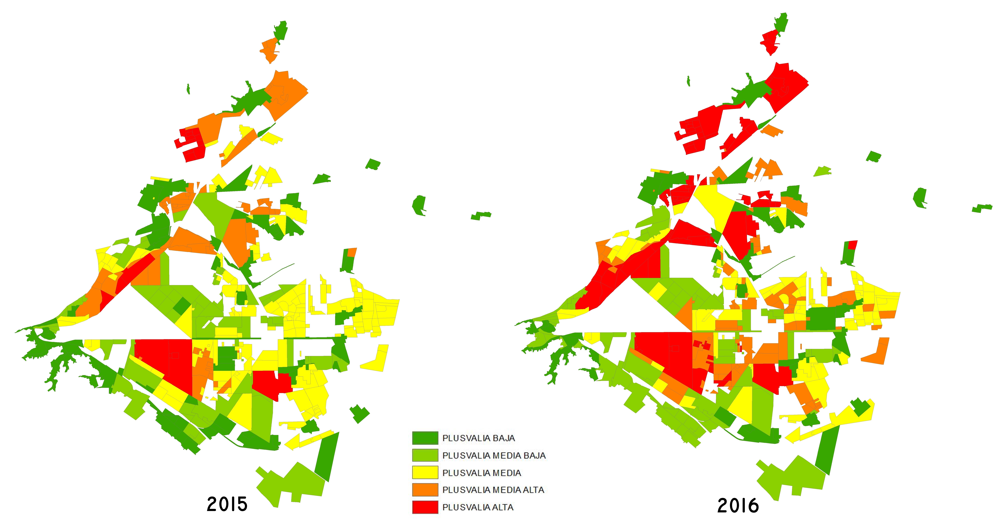

La plusvalía se refiere al incremento del valor de un terreno o inmueble a través del tiempo. Aunque varía de acuerdo a diversos aspectos, siempre conserva cierta permanencia ya que la tierra y los ladrillos no desaparecen y rara vez pierden valor.
En Torreón, de 2015 a 2016 por lo menos 63 colonias de la ciudad aumentaron de plusvalía media a plusvalía alta y otros polígonos de la ciudad, han ido aumentando de plusvalía en diversas etapas.
Pero ¿qué define una plusvalía? Todas las propiedades tienden a acumular valor con los años. Los hechos que provocan minusvalía en la tierra son considerados incidentales (por ejemplo, una catástrofe natural o una guerra). Fuera de estos casos extremos, lo que se tiene son movimientos de mercado que afectan temporalmente el comportamiento de los precios de renta y venta.
¿Qué determina una mayor plusvalía? Aunque es imposible prever con exactitud las zonas que se apreciarán en el futuro y el tiempo que esto tomará, es posible establecer cuatro parámetros.
1.Ubicación: si el inmueble se encuentra en una zona con todos los servicios básicos y además cuenta con amenidades, un ambiente apacible o se encuentra cerca de escuelas, supermercados u oficinas, es muy probable que aumente su valor.
2.Accesibilidad: verificar que existan vías de comunicación que hagan accesible el destino. Además de calcular el gasto en transporte, se debe evitar comprar una casa hermosa a la que sea difícil llegar, algo que sin duda puede disminuir su precio.
3.Servicios: revisar el suministro de los servicios, para ello se puede preguntar a los vecinos si tienen o no problemas con el abasto de agua, drenaje o luz. 4. 4.Planes de desarrollo: la plusvalía depende mucho de las construcciones futuras. Por ejemplo, saber si en las cercanías se desarrollará un centro comercial, quiere decir que en un lapso de entre cinco y 10 años la casa podría aumentar potencialmente su valor.
SITUACIÓN EN EL MUNICIPIO
Actualmente la Ciudad de Torreón tiene una población estimada a 2015 de 646,586 habitantes en el área urbana y 32,702 en el área rural, con 477 fraccionamientos habitacionales registrados en su mancha urbana (incluyendo colonias).
Torreón sufre una urbanización desigual, fragmentada por la producción de un territorio urbano disperso y cortado por vías de comunicación. Las administraciones públicas se ven rebasadas por la constante demanda ciudadana de acceder a una vida de calidad.
Se puede notar el crecimiento de la plusvalía en la ciudad de Torreón a través de los años 2015 y 2016. En el año 2015 los polígonos con una mayor plusvalía se concentraban dispersos, entre las colonias que destacaban con esta característica se encontraban, Club campestre Montebello, Villas la Rosita, Torreón Jardín, Palmas la Rosita, Campestre la Rosita, los Ángeles, San Isidro, Las Villas, Club Campestre Montebello.
En el año 2016 la plusvalía aumento 8.08% en el ámbito nacional, por lo tanto en Torreón se vio reflejado cambiando los polígonos que estaban en media a plusvalía alta. Algunas de las colonias en las que aumentó la plusvalía son: Colonia navarro, La Estrella, Ampliación los Ángeles, Ampliación La Rosita, Villa Jardín, Nueva los Ángeles, Nuevo san Isidro, San Luciano, Viñedos, Senderos, Las margaritas, Granjas san Isidro, Villa san Isidro, Hacienda el Rosario, Villa las Margaritas, Campanas de Iberia, Fraccionamiento la Ciénega, Club de golf los Azulejos, Villas de la Ibero, Residencial Ibero, Rincón san Ángel, Residencial Santa Bárbara, Residencial Galerías, Residencial Cumbres, Las Trojes, Ampliación la rosita, entre otras.
CONTEXTO NACIONAL
Por otra parte, el Índice de Sociedad Hipotecaria Federal (SHF) en el 2016 indica que los precios de la Vivienda registraron una apreciación nominal de 8.08 por ciento en el ámbito nacional, en comparación con igual periodo del año previo, con lo que se logró un dinamismo positivo al apreciarse los activos inmobiliarios residenciales.
De acuerdo con la Sociedad Hipotecaria Federal (SHF), el segmento de vivienda nueva registró una variación de 8.88 por ciento, mientras que el correspondiente a la vivienda usada aumentó 6.78 por ciento en los primeros tres meses del año.
El índice para casas solas creció 7.78 por ciento, en tanto que el correspondiente a viviendas en condominio y departamentos (considerados de manera conjunta) mostró una apreciación de 8.49 por ciento.
MAPA: CRECIMIENTO DE PLUSVALÍA

**Fuente: elaboración propia Implan a partir del dictamen de la tabla de valores catastrales para el ejercicio fiscal del 2015.